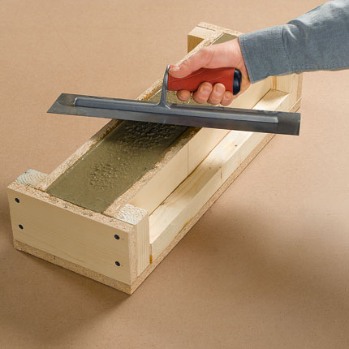

← Back to Year 9 T2 Toolkits
Design
Learning Focus

By the end of this toolkit, you will be able to:
- Interpret the design brief: Understand beam requirements, span, loading, and test specifications.
- Design beam geometry: Select appropriate cross-section dimensions, span, and reinforcement layout.
- Plan concrete mix: Select mix proportions, calculate quantities, and plan mixing procedures.
- Develop casting sequence: Create a step-by-step plan for mould preparation, reinforcement placement, and concrete placement.
- Plan test procedures: Design test setup, loading method, and data collection procedures.
Timing: Complete Toolkit 3 design work before starting your beam casting in Toolkit 4. Good planning here ensures efficient casting and reliable test results.
Understanding the Design Brief
Before you start designing, make sure you understand every requirement:
- Span requirement: The distance between supports (e.g., 500 mm, 600 mm).
- Cross-section dimensions: Width and depth of the beam (e.g., 50 mm × 75 mm).
- Loading method: How the load will be applied (central point load, two-point loading, distributed load).
- Reinforcement requirements: Type, size, and placement of reinforcement (if required).
- Material constraints: Available materials, mix proportions, curing conditions.
- Test requirements: What data must be collected, failure criteria, safety requirements.
Design Tip: Link every design decision to structural behaviour. Consider where tension and compression occur, how reinforcement will work, and what failure mode you expect. This helps you make informed design choices.
Beam Geometry Design
1. Cross-Section Selection
Choose dimensions that balance strength, material use, and buildability:
- Depth: Deeper beams are stronger in bending (depth is squared in bending strength calculations). However, deeper beams use more material and may be harder to handle.
- Width: Affects shear capacity and stability. Narrower beams are more efficient but may be less stable during handling.
- Aspect ratio: Typical beams have depth 1.5-2 times the width. This provides good strength-to-weight ratio.
2. Span Selection
Span affects both design and testing:
- Longer spans: Create higher bending moments for the same load, making failure more likely. Good for testing but require stronger beams.
- Shorter spans: Reduce bending moments, making beams stronger. May require higher loads to achieve failure.
- Span-to-depth ratio: Typical ratios are 10-20. Very long spans relative to depth create high deflections.
3. Reinforcement Layout
Plan reinforcement placement based on loading:
- For simply supported beams: Place reinforcement near the bottom (tension side).
- Cover requirements: Ensure adequate cover (typically 15-20 mm minimum) to protect reinforcement.
- Reinforcement type: Choose appropriate size (e.g., 3 mm wire, 6 mm bar) based on beam size and expected loads.
- Placement method: Plan how to position reinforcement accurately in the mould (spacers, supports, or tied to formwork).
Concrete Mix Planning
1. Mix Proportion Selection
Based on Toolkit 2 knowledge, select appropriate proportions:
- Typical mix: 1 : 2 : 3 : 0.5 (cement : sand : aggregate : water) is a good starting point.
- Water-cement ratio: Aim for 0.4-0.5 for good strength while maintaining workability.
- Workability: Mix must be workable enough to place and compact in the mould.
- Strength: Consider the expected load - higher loads may require stronger mixes (more cement, lower W/C).
2. Quantity Calculations
Calculate how much concrete you need:
- Beam volume: Length × width × depth (in consistent units, e.g., mm³ or m³).
- Add waste factor: Add 10-20% extra to account for waste and spillage.
- Calculate component quantities: Use mix proportions to calculate amounts of each component.
- Check available materials: Ensure you have enough of each component.
3. Mixing Procedure
Plan your mixing sequence:
- Dry mixing: Mix cement, sand, and aggregate thoroughly before adding water.
- Water addition: Add water gradually while mixing to achieve desired consistency.
- Mixing time: Mix until uniform (typically 2-3 minutes). Avoid over-mixing which can reduce workability.
- Consistency check: Test workability (slump test or visual assessment) before placing.
Casting Sequence Planning
Create a logical, step-by-step casting plan:
- Mould preparation: Clean mould, apply release agent (if needed), check dimensions.
- Reinforcement placement: Position reinforcement accurately using spacers or supports. Check cover dimensions.
- Mixing concrete: Prepare mix according to planned proportions. Check workability.
- Placing concrete: Fill mould in layers, compacting each layer (tapping, rodding, or vibrating).
- Finishing: Level the top surface, smooth if required. Label the beam with identification.
- Initial curing: Cover to prevent moisture loss. Keep in a protected location.
- Demoulding: Remove mould after initial set (typically 24-48 hours). Handle carefully.
- Continued curing: Keep beam moist and protected for full curing period (minimum 7 days).
Safety considerations:
- Wear appropriate PPE (gloves, eye protection, aprons).
- Handle wet concrete carefully - it's caustic and can cause skin irritation.
- Work in a well-ventilated area when mixing.
- Clean tools and equipment immediately after use.
Test Procedure Planning
1. Test Setup
Plan your test arrangement:
- Support arrangement: Position supports at the specified span. Ensure supports are level and stable.
- Loading method: Plan how load will be applied (central point, two-point, distributed).
- Load application: Decide on loading mechanism (weights, hydraulic jack, etc.).
- Measurement points: Plan where to measure deflection (typically mid-span).
2. Data Collection Plan
Decide what data to collect:
- Initial measurements: Beam dimensions, span, reinforcement details, curing time.
- During loading: Load increments, deflection at each step, observations (cracking, sounds).
- At first crack: Load, location, crack pattern.
- At failure: Maximum load, failure mode, crack pattern, deflection.
- After failure: Photos, inspection of failure surface, notes on tension/compression zones.
3. Safety Planning
Plan for safe testing:
- Clear zone: Ensure no one is in the line of fire if the beam fails suddenly.
- PPE: Safety glasses, appropriate clothing, closed-toe shoes.
- Loading procedure: Add load in small increments, pause to observe, record data.
- Emergency procedures: Know how to stop loading safely if problems occur.
Activities & Evidence
1) Design Brief Analysis
- Read and annotate the design brief, highlighting all requirements.
- Create a checklist of requirements to ensure your design meets all criteria.
- Identify any constraints or limitations.
2) Beam Design
- Select beam dimensions (width, depth, length) and justify your choices.
- Design reinforcement layout (type, size, placement).
- Create technical sketches showing beam cross-section and reinforcement placement.
- Calculate beam volume and required concrete quantities.
3) Mix Design
- Select concrete mix proportions and justify your choice.
- Calculate quantities of each component needed.
- Plan mixing procedure and workability checks.
4) Casting Plan
- Create a detailed step-by-step casting sequence.
- Plan mould preparation and reinforcement placement.
- Identify safety hazards and controls for casting operations.
5) Test Plan
- Design test setup and loading arrangement.
- Plan data collection procedures and recording methods.
- Identify safety requirements for testing.
6) Google Classroom Check-in
- Submit your beam design, mix design, and casting plan before starting construction.
- Get teacher feedback on your design before casting.
Resources
- Design brief and requirements sheet.
- Concrete mix design charts and calculators.
- Reinforcement layout examples and standards.
- Beam design examples and folios for reference.
- Drawing tools and CAD software (optional).